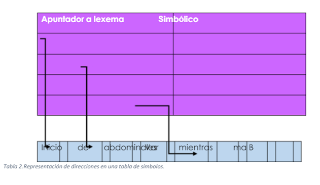

1.6 Generación de la tabla de símbolo y de direcciones
Hecho por: Julio Cesar Perez Hernandez
Generación de la tabla de símbolo y de direcciones
Las tablas de símbolos (también llamadas tablas de identificadores y tablas de nombres), realizar dos funciones en el proceso de traducción:
• Verificar que la semántica sea correcta.
• Generación del código apropiado.
Ambas funciones se realizan insertando o recuperando de la tabla de símbolos los atributos de las variables usadas en el programa fuente. Estos atributos, tales como: el nombre, tipo, dirección de almacenamiento y dimensión de una variable, usualmente se encuentran explícitamente en las declaraciones o más implícitamente a través del contexto en que aparecen los nombres de variables en el programa. Una de las estructuras de datos que se encuentran relacionadas con las fases del proceso de compilación es la tabla de símbolos, la cual tiene como propósito registrar información que se comparte entre varias etapas y que permitir administrar los recursos asociados a las entidades que manipulará él programa. La tabla de símbolos tiene típicamente la siguiente estructura:
Una tabla de símbolos se designa por la entidad, token -deriva dos del análisis léxico; así como una serie de atributos (tipo de dato, dirección en memoria) que emanan de otras fases (análisis gramatical y semántico). Las consultas a la tabla de símbolos se realizan por medio del lexema con que se designa a la entidad. Esta concepción de la tabla de símbolos es demasiado simple para fines prácticos si consideramos que el lexema de la entidad es de longitud variable y se desea que la estructura sea homogénea. Una solución es considerar que en el campo lexema se tiene un apuntador (que siempre ocupa el mismo espacio) hacia donde se registrarán propiamente los lexemas. Eso evitará el desperdicio de memoria al tener el espacio justo para representante r a cada lexema.

¿Cuando construir la tabla de símbolos y cuando interactuar con ella?
El punto del procesador de traducción en el cual son invocadas las rutinas de manejo de la tabla de símbolos depende primeramente del número y la naturaleza de los pasos del compilador. En un compilador metapasos, la tabla de símbolos es creada durante el paso de análisis léxico. Por medio de un índice se entra aluna tabla de símbolos para ubicar la variable, a partir del token generado por el escáner.
Contenido de la tabla de símbolos.
Una tabla de símbolos puede conceptualizarse como una serie de renglones, cada uno de los cuales contiene una lista de valores de atributos que son asociados con una variable en particular. Las clases de los atributos que aparecen en una tabla de símbolos dependientes en algún grado de la naturaleza del lenguaje de programación para el cual se escribe el compilador. Por ejemplo, un lenguaje puede ser sin tipos, y por lo tanto el atributo tipo no necesita aparecer en luna tabla. Similarmente, la organización de la tabla de símbolos variará según las limitaciones de memoria y tiempo de acceso.
Bibliografia:
LENGUAJES Y AUTOMATAS II. (2017). 1.5.- ESQUEMA DE TRADUCCIÓN. 07/03/2021, de SITE123 Sitio web: https://5e344735705b1.site123.me/unidad-i-%C3%81nalisis-sem%C3%A1ntico/15-esquema-de-traducci%C3%B3n